Change analysis for Bolivia, Plurinational State of for PRIMAP-hist
v2.5.1_final compared to v2.5_final
Overview over
emissions by sector and gas
The following figures show the aggregate national total emissions
excluding LULUCF AR6GWP100 for the country reported priority scenario.
The dotted linesshow the v2.5_final data.
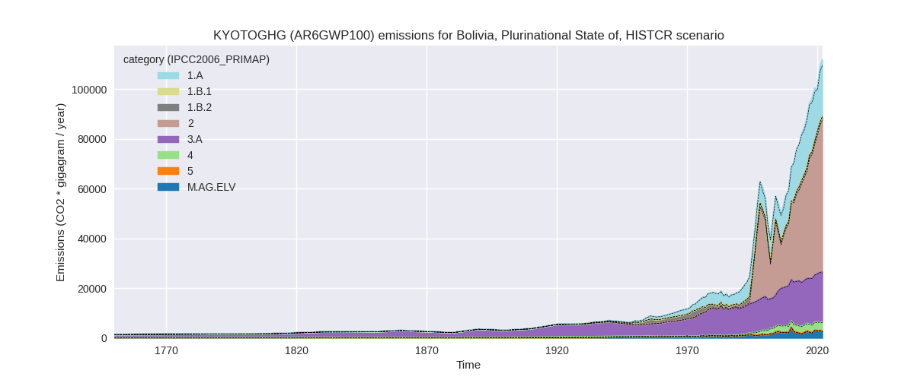
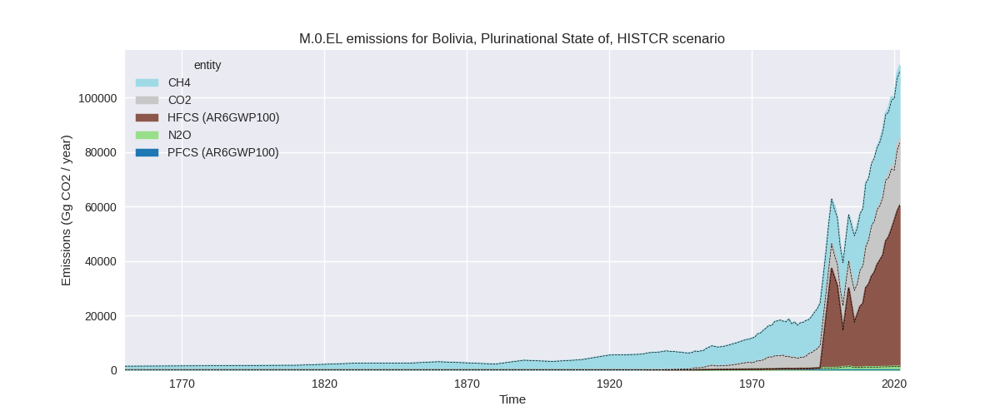
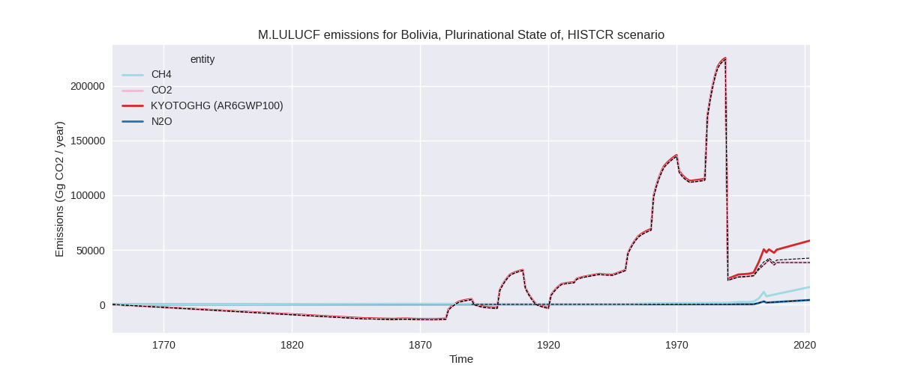
The following figures show the aggregate national total emissions
excluding LULUCF AR6GWP100 for the third party priority scenario. The
dotted linesshow the v2.5_final data.
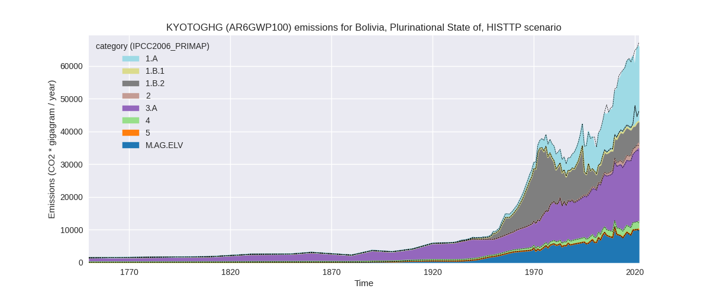
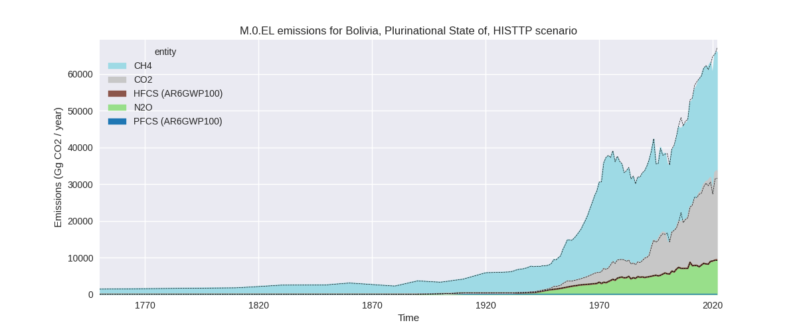
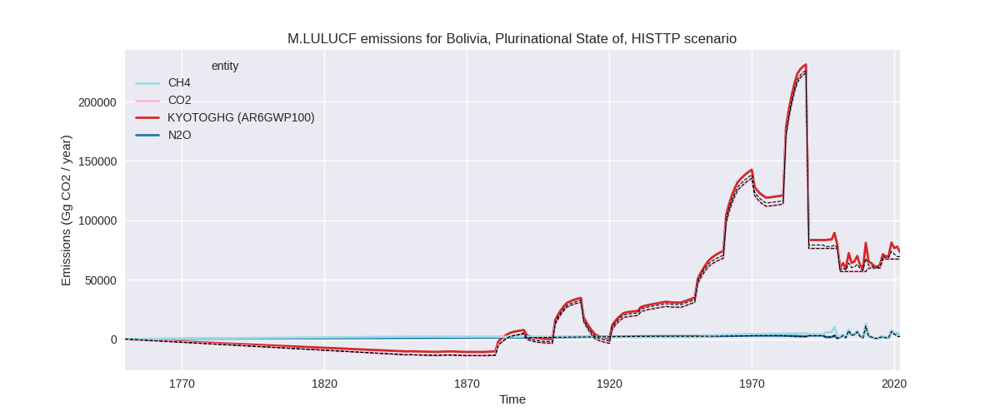
Overview over changes
In the country reported priority scenario we have the following
changes for aggregate Kyoto GHG and national total emissions excluding
LULUCF (M.0.EL):
- Emissions in 2022 have changed by 1.9%% (2096.52 Gg CO2 / year)
- Emissions in 1990-2022 have changed by 0.6%% (384.14 Gg CO2 / year)
In the third party priority scenario we have the following changes
for aggregate Kyoto GHG and national total emissions excluding LULUCF
(M.0.EL):
- Emissions in 2022 have changed by -1.8%% (-1241.53 Gg CO2 / year)
- Emissions in 1990-2022 have changed by -1.3%% (-643.15 Gg CO2 / year)
Most
important changes per scenario and time frame
In the country reported priority scenario the
following sector-gas combinations have the highest absolute impact on
national total KyotoGHG (AR6GWP100) emissions in 2022
(top 5):
- 1: 1.A, CO2 with 1974.21 Gg CO2 / year (9.7%)
- 2: 1.B.2, CH4 with -401.51 Gg CO2 / year (-30.6%)
- 3: 3.A, CH4 with 328.02 Gg CO2 / year (1.6%)
- 4: M.AG.ELV, CH4 with 223.51 Gg CO2 / year (13.1%)
- 5: 2, CO2 with -35.00 Gg CO2 / year (-1.4%)
In the country reported priority scenario the
following sector-gas combinations have the highest absolute impact on
national total KyotoGHG (AR6GWP100) emissions in
1990-2022 (top 5):
- 1: 1.A, CO2 with 416.49 Gg CO2 / year (3.5%)
- 2: 1.B.2, CH4 with -33.37 Gg CO2 / year (-2.9%)
- 3: 2, CO2 with -17.43 Gg CO2 / year (-1.4%)
- 4: M.AG.ELV, CH4 with 11.55 Gg CO2 / year (0.9%)
- 5: 1.A, CH4 with 7.48 Gg CO2 / year (6.6%)
In the third party priority scenario the following
sector-gas combinations have the highest absolute impact on national
total KyotoGHG (AR6GWP100) emissions in 2022 (top
5):
- 1: 1.B.2, CH4 with -3872.14 Gg CO2 / year (-37.8%)
- 2: 1.A, CO2 with 1887.45 Gg CO2 / year (9.2%)
- 3: 3.A, CH4 with 357.89 Gg CO2 / year (1.7%)
- 4: M.AG.ELV, N2O with 267.87 Gg CO2 / year (3.3%)
- 5: M.AG.ELV, CH4 with 165.94 Gg CO2 / year (12.0%)
In the third party priority scenario the following
sector-gas combinations have the highest absolute impact on national
total KyotoGHG (AR6GWP100) emissions in 1990-2022 (top
5):
- 1: 1.B.2, CH4 with -769.89 Gg CO2 / year (-9.9%)
- 2: 1.A, CO2 with 129.76 Gg CO2 / year (1.0%)
- 3: 1.B.1, CO2 with 28.58 Gg CO2 / year (49.9%)
- 4: 1.A, N2O with 26.43 Gg CO2 / year (16.5%)
- 5: M.AG.ELV, N2O with -20.87 Gg CO2 / year (-0.3%)
Notes on data changes
No country specific notes present for this changelog.
Changes by sector and gas
For each scenario and time frame the changes are displayed for all
individual sectors and all individual gases. In the sector plot we use
aggregate Kyoto GHGs in AR6GWP100. In the gas plot we usenational total
emissions without LULUCF. ## country reported scenario
2022
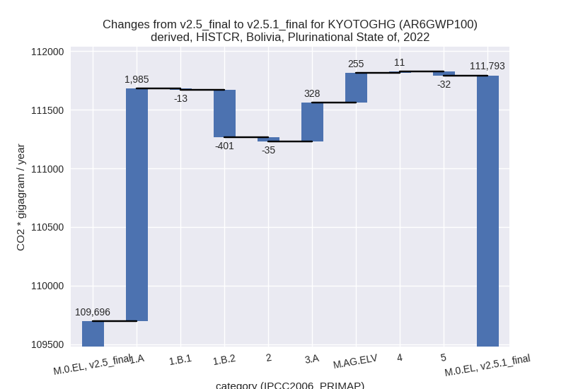
1990-2022
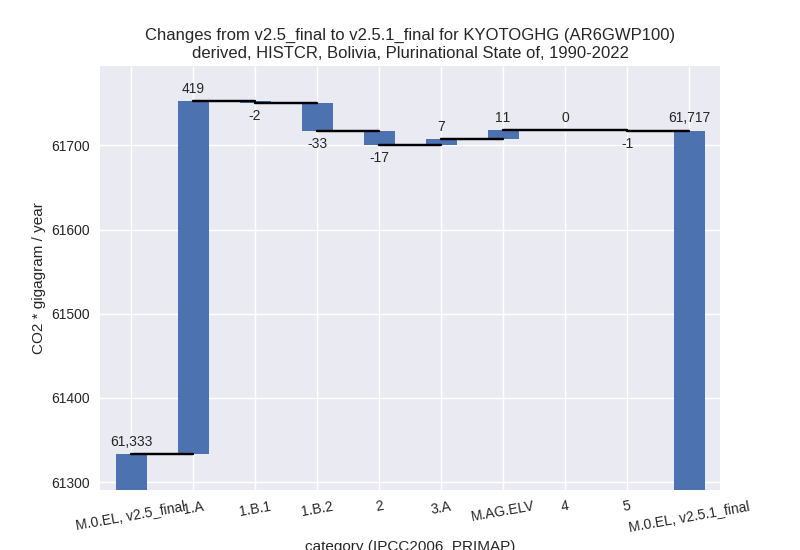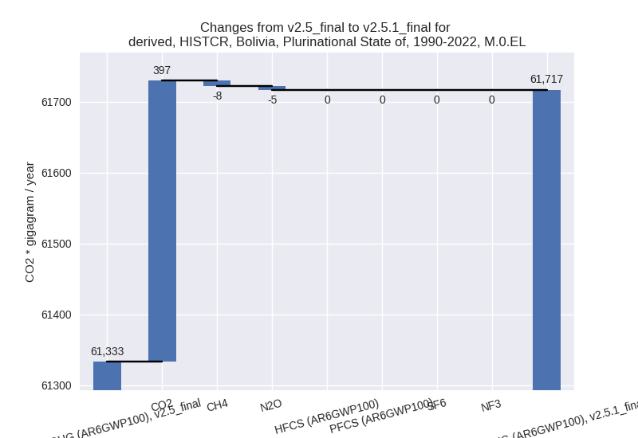
third party scenario
2022
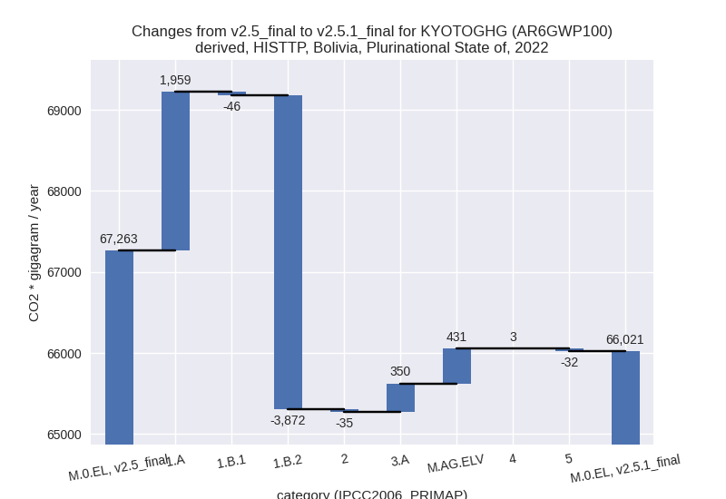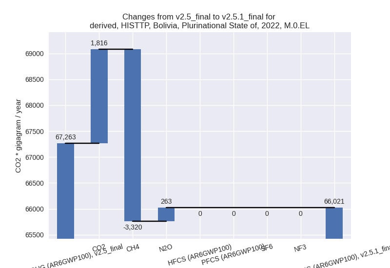
1990-2022
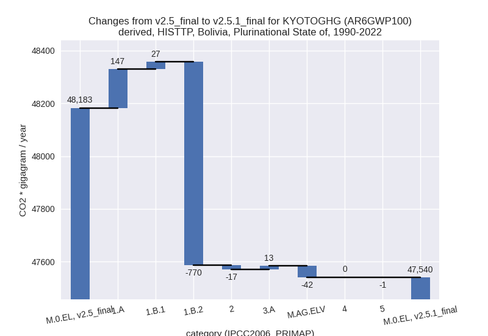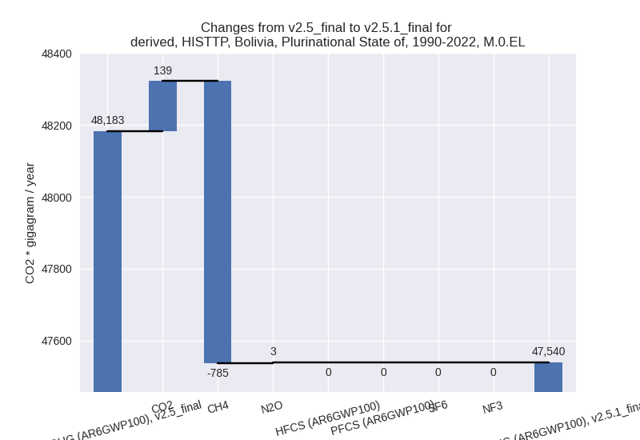
Detailed changes for the
scenarios:
country reported scenario
(HISTCR):
Most important changes
per time frame
For 2022 the following sector-gas combinations have
the highest absolute impact on national total KyotoGHG (AR6GWP100)
emissions in 2022 (top 5):
- 1: 1.A, CO2 with 1974.21 Gg CO2 / year (9.7%)
- 2: 1.B.2, CH4 with -401.51 Gg CO2 / year (-30.6%)
- 3: 3.A, CH4 with 328.02 Gg CO2 / year (1.6%)
- 4: M.AG.ELV, CH4 with 223.51 Gg CO2 / year (13.1%)
- 5: 2, CO2 with -35.00 Gg CO2 / year (-1.4%)
For 1990-2022 the following sector-gas combinations
have the highest absolute impact on national total KyotoGHG (AR6GWP100)
emissions in 1990-2022 (top 5):
- 1: 1.A, CO2 with 416.49 Gg CO2 / year (3.5%)
- 2: 1.B.2, CH4 with -33.37 Gg CO2 / year (-2.9%)
- 3: 2, CO2 with -17.43 Gg CO2 / year (-1.4%)
- 4: M.AG.ELV, CH4 with 11.55 Gg CO2 / year (0.9%)
- 5: 1.A, CH4 with 7.48 Gg CO2 / year (6.6%)
Changes in the main sectors for aggregate KyotoGHG (AR6GWP100)
are
- 1: Total sectoral emissions in 2022 are 23563.47 Gg
CO2 / year which is 21.1% of M.0.EL emissions. 2022 Emissions have
changed by 7.1% (1570.52 Gg CO2 /
year). 1990-2022 Emissions have changed by 2.8% (384.16 Gg CO2 / year). For 2022 the
changes per gas
are:
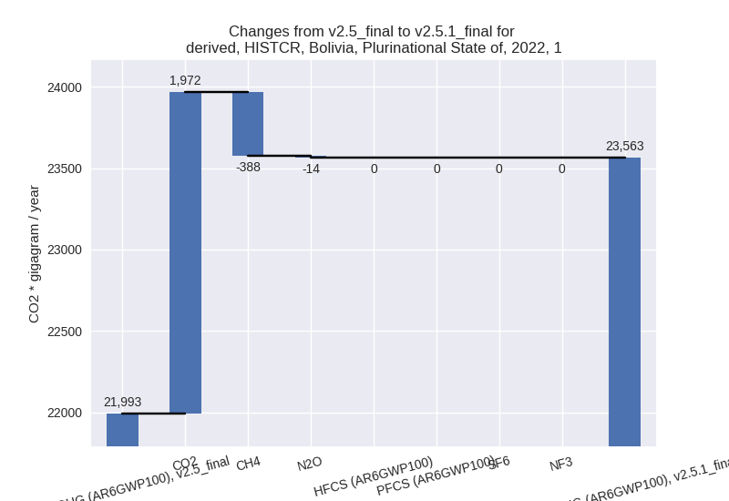
For 1990-2022 the changes per gas
are:
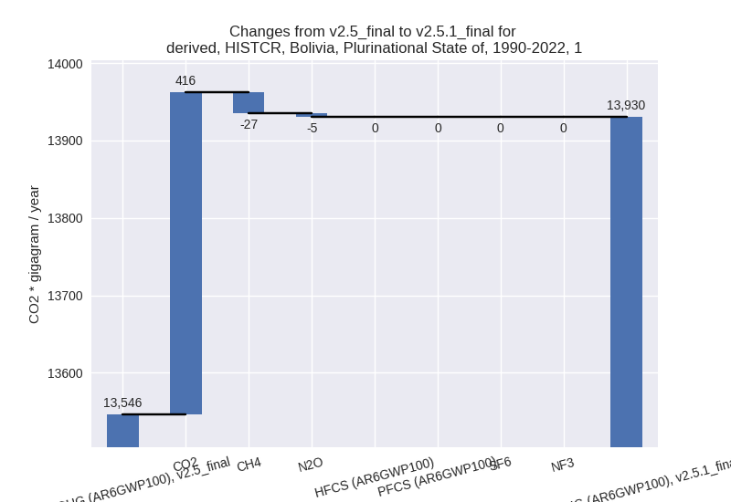
The changes come from the following subsectors:
- 1.A: Total sectoral emissions in 2022 are 22459.67
Gg CO2 / year which is 95.3% of category 1 emissions. 2022 Emissions
have changed by 9.7% (1985.39 Gg CO2
/ year). 1990-2022 Emissions have changed by 3.4% (419.22 Gg CO2 / year). For 2022 the
changes per gas
are:
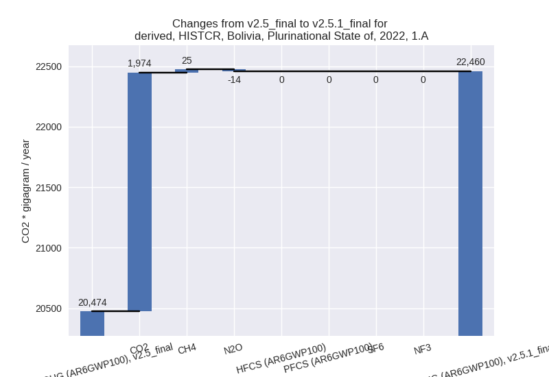
For 1990-2022 the changes per gas
are:
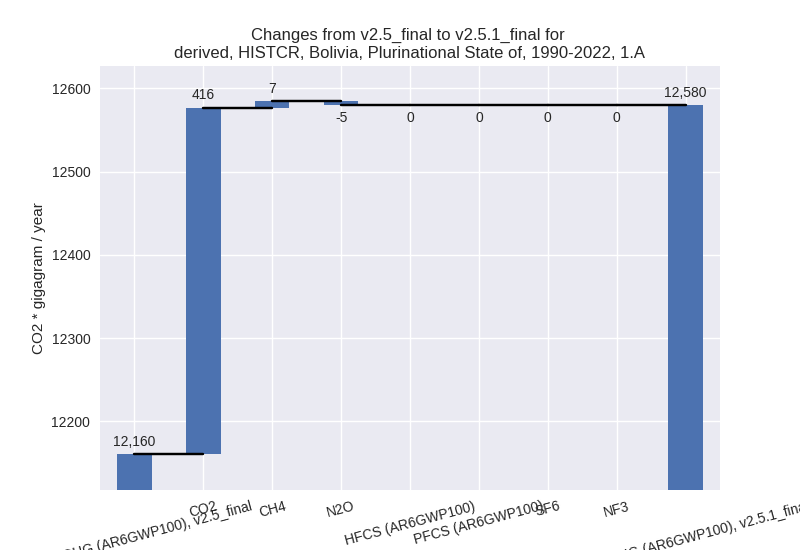
There is no subsector information available in PRIMAP-hist.
- 1.B.1: Total sectoral emissions in 2022 are 189.97
Gg CO2 / year which is 0.8% of category 1 emissions. 2022 Emissions have
changed by -6.6% (-13.48 Gg CO2 /
year). 1990-2022 Emissions have changed by -0.9% (-1.68 Gg CO2 / year). For 2022 the
changes per gas
are:
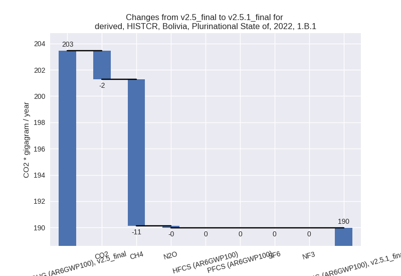
There is no subsector information available in PRIMAP-hist.
- 1.B.2: Total sectoral emissions in 2022 are 913.83
Gg CO2 / year which is 3.9% of category 1 emissions. 2022 Emissions have
changed by -30.5% (-401.39 Gg CO2 /
year). 1990-2022 Emissions have changed by -2.8% (-33.37 Gg CO2 / year). For 2022 the
changes per gas
are:
For 1990-2022 the changes per gas
are:
There is no subsector information available in PRIMAP-hist.
- 2: Total sectoral emissions in 2022 are 61495.72 Gg
CO2 / year which is 55.0% of M.0.EL emissions. 2022 Emissions have
changed by -0.1% (-34.99 Gg CO2 /
year). 1990-2022 Emissions have changed by -0.1% (-17.43 Gg CO2 / year).
- M.AG: Total sectoral emissions in 2022 are 23220.79
Gg CO2 / year which is 20.8% of M.0.EL emissions. 2022 Emissions have
changed by 2.6% (582.76 Gg CO2 /
year). 1990-2022 Emissions have changed by 0.1% (18.06 Gg CO2 / year). For 2022 the
changes per gas
are:
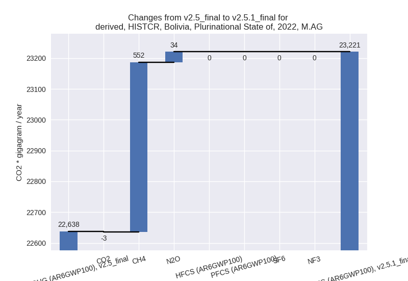
The changes come from the following subsectors:
- 3.A: Total sectoral emissions in 2022 are 20377.14
Gg CO2 / year which is 87.8% of category M.AG emissions. 2022 Emissions
have changed by 1.6% (327.78 Gg CO2
/ year). 1990-2022 Emissions have changed by 0.0% (7.25 Gg CO2 / year).
- M.AG.ELV: Total sectoral emissions in 2022 are
2843.65 Gg CO2 / year which is 12.2% of category M.AG emissions. 2022
Emissions have changed by 9.9%
(254.98 Gg CO2 / year). 1990-2022 Emissions have changed by 0.6% (10.81 Gg CO2 / year). For 2022 the
changes per gas
are:
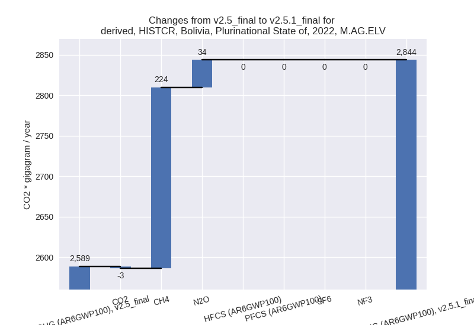
There is no subsector information available in PRIMAP-hist.
- 4: Total sectoral emissions in 2022 are 3336.98 Gg
CO2 / year which is 3.0% of M.0.EL emissions. 2022 Emissions have
changed by 0.3% (10.70 Gg CO2 /
year). 1990-2022 Emissions have changed by 0.0% (0.32 Gg CO2 / year).
- 5: Total sectoral emissions in 2022 are 175.67 Gg
CO2 / year which is 0.2% of M.0.EL emissions. 2022 Emissions have
changed by -15.6% (-32.49 Gg CO2 /
year). 1990-2022 Emissions have changed by -0.9% (-0.98 Gg CO2 / year). For 2022 the
changes per gas
are:
third party scenario (HISTTP):
Most important changes
per time frame
For 2022 the following sector-gas combinations have
the highest absolute impact on national total KyotoGHG (AR6GWP100)
emissions in 2022 (top 5):
- 1: 1.B.2, CH4 with -3872.14 Gg CO2 / year (-37.8%)
- 2: 1.A, CO2 with 1887.45 Gg CO2 / year (9.2%)
- 3: 3.A, CH4 with 357.89 Gg CO2 / year (1.7%)
- 4: M.AG.ELV, N2O with 267.87 Gg CO2 / year (3.3%)
- 5: M.AG.ELV, CH4 with 165.94 Gg CO2 / year (12.0%)
For 1990-2022 the following sector-gas combinations
have the highest absolute impact on national total KyotoGHG (AR6GWP100)
emissions in 1990-2022 (top 5):
- 1: 1.B.2, CH4 with -769.89 Gg CO2 / year (-9.9%)
- 2: 1.A, CO2 with 129.76 Gg CO2 / year (1.0%)
- 3: 1.B.1, CO2 with 28.58 Gg CO2 / year (49.9%)
- 4: 1.A, N2O with 26.43 Gg CO2 / year (16.5%)
- 5: M.AG.ELV, N2O with -20.87 Gg CO2 / year (-0.3%)
Changes in the main sectors for aggregate KyotoGHG (AR6GWP100)
are
- 1: Total sectoral emissions in 2022 are 29588.83 Gg
CO2 / year which is 44.8% of M.0.EL emissions. 2022 Emissions have
changed by -6.2% (-1958.04 Gg CO2 /
year). 1990-2022 Emissions have changed by -2.8% (-595.34 Gg CO2 / year). For 2022
the changes per gas
are:
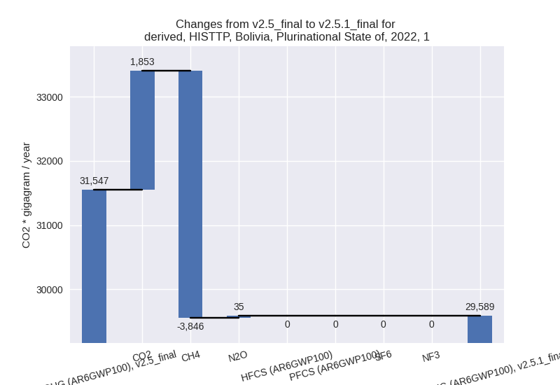
For 1990-2022 the changes per gas
are:
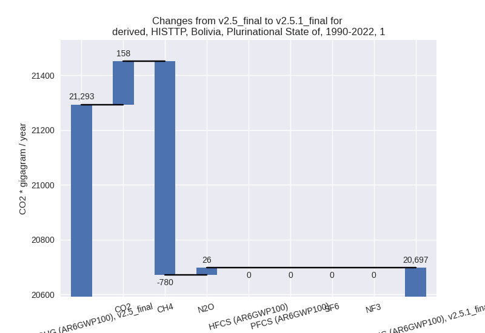
The changes come from the following subsectors:
- 1.A: Total sectoral emissions in 2022 are 22915.28
Gg CO2 / year which is 77.4% of category 1 emissions. 2022 Emissions
have changed by 9.4% (1959.49 Gg CO2
/ year). 1990-2022 Emissions have changed by 1.1% (147.18 Gg CO2 / year). For 2022 the
changes per gas
are:
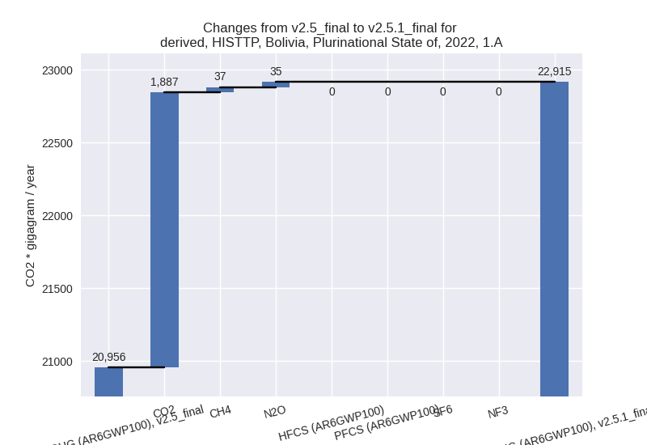
There is no subsector information available in PRIMAP-hist.
- 1.B.1: Total sectoral emissions in 2022 are 189.97
Gg CO2 / year which is 0.6% of category 1 emissions. 2022 Emissions have
changed by -19.3% (-45.52 Gg CO2 /
year). 1990-2022 Emissions have changed by 18.3% (27.36 Gg CO2 / year). For 2022 the
changes per gas
are:
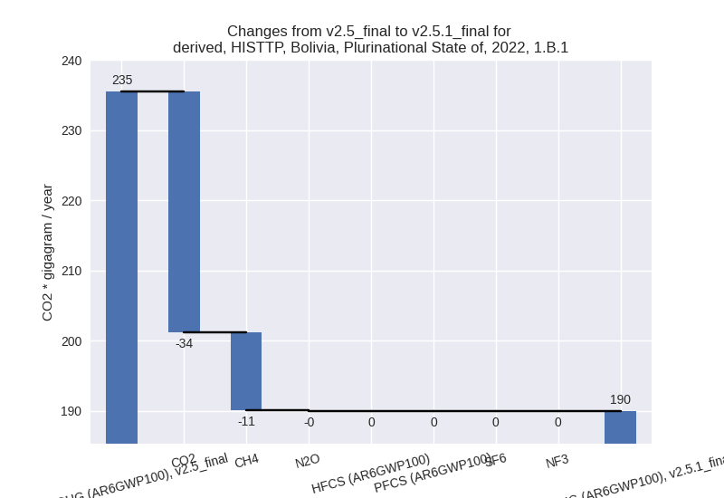
For 1990-2022 the changes per gas
are:
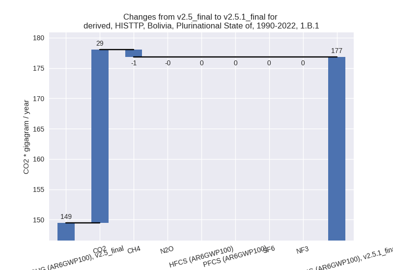
There is no subsector information available in PRIMAP-hist.
- 1.B.2: Total sectoral emissions in 2022 are 6483.59
Gg CO2 / year which is 21.9% of category 1 emissions. 2022 Emissions
have changed by -37.4% (-3872.01 Gg
CO2 / year). 1990-2022 Emissions have changed by -9.3% (-769.89 Gg CO2 / year). For 2022
the changes per gas
are:
For 1990-2022 the changes per gas
are:
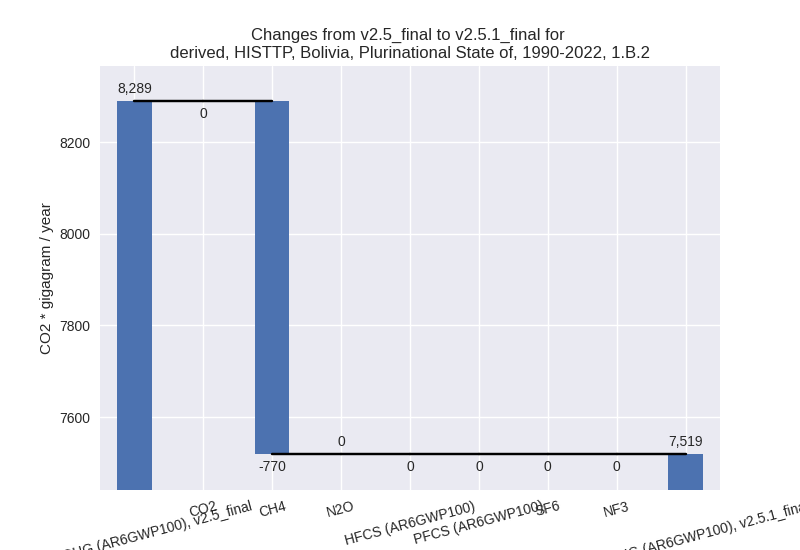
There is no subsector information available in PRIMAP-hist.
- 2: Total sectoral emissions in 2022 are 1637.92 Gg
CO2 / year which is 2.5% of M.0.EL emissions. 2022 Emissions have
changed by -2.1% (-34.99 Gg CO2 /
year). 1990-2022 Emissions have changed by -1.9% (-17.43 Gg CO2 / year). For 2022 the
changes per gas
are:
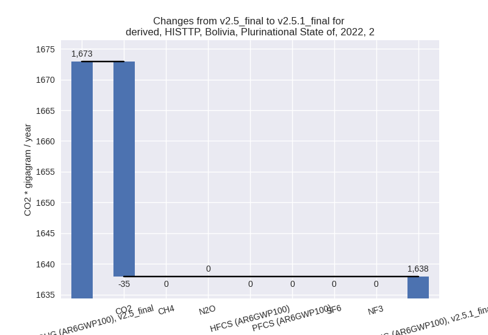
- M.AG: Total sectoral emissions in 2022 are 32333.44
Gg CO2 / year which is 49.0% of M.0.EL emissions. 2022 Emissions have
changed by 2.5% (781.22 Gg CO2 /
year). 1990-2022 Emissions have changed by -0.1% (-29.48 Gg CO2 / year). For 2022 the
changes per gas
are:
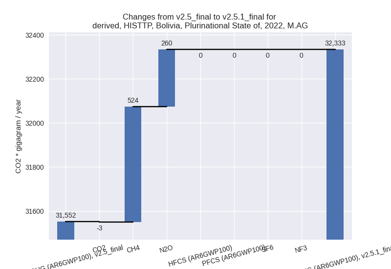
The changes come from the following subsectors:
- 3.A: Total sectoral emissions in 2022 are 22313.24
Gg CO2 / year which is 69.0% of category M.AG emissions. 2022 Emissions
have changed by 1.6% (349.99 Gg CO2
/ year). 1990-2022 Emissions have changed by 0.1% (13.00 Gg CO2 / year).
- M.AG.ELV: Total sectoral emissions in 2022 are
10020.20 Gg CO2 / year which is 31.0% of category M.AG emissions. 2022
Emissions have changed by 4.5%
(431.23 Gg CO2 / year). 1990-2022 Emissions have changed by -0.6% (-42.47 Gg CO2 / year). For 2022 the
changes per gas
are:
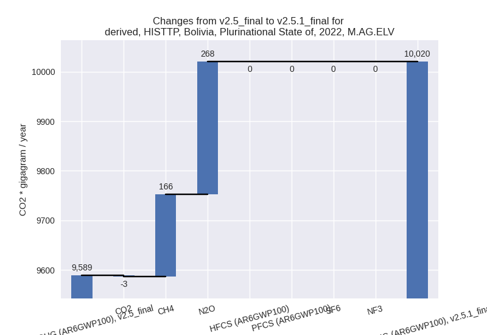
There is no subsector information available in PRIMAP-hist.
- 4: Total sectoral emissions in 2022 are 2285.38 Gg
CO2 / year which is 3.5% of M.0.EL emissions. 2022 Emissions have
changed by 0.1% (2.77 Gg CO2 /
year). 1990-2022 Emissions have changed by 0.0% (0.08 Gg CO2 / year).
- 5: Total sectoral emissions in 2022 are 175.67 Gg
CO2 / year which is 0.3% of M.0.EL emissions. 2022 Emissions have
changed by -15.6% (-32.49 Gg CO2 /
year). 1990-2022 Emissions have changed by -0.9% (-0.98 Gg CO2 / year). For 2022 the
changes per gas
are:
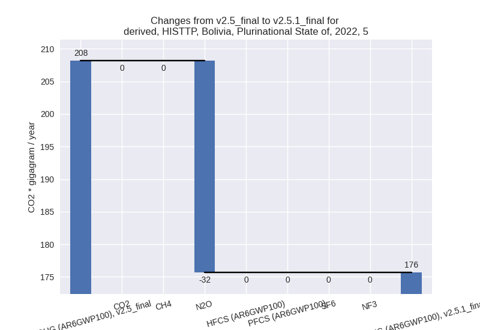